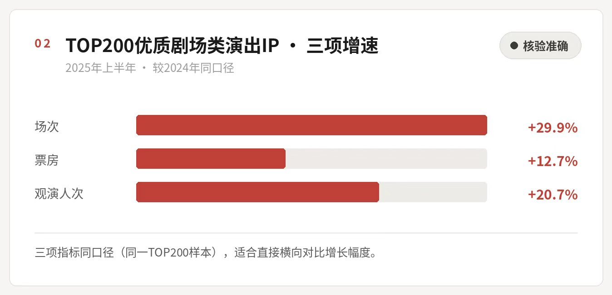
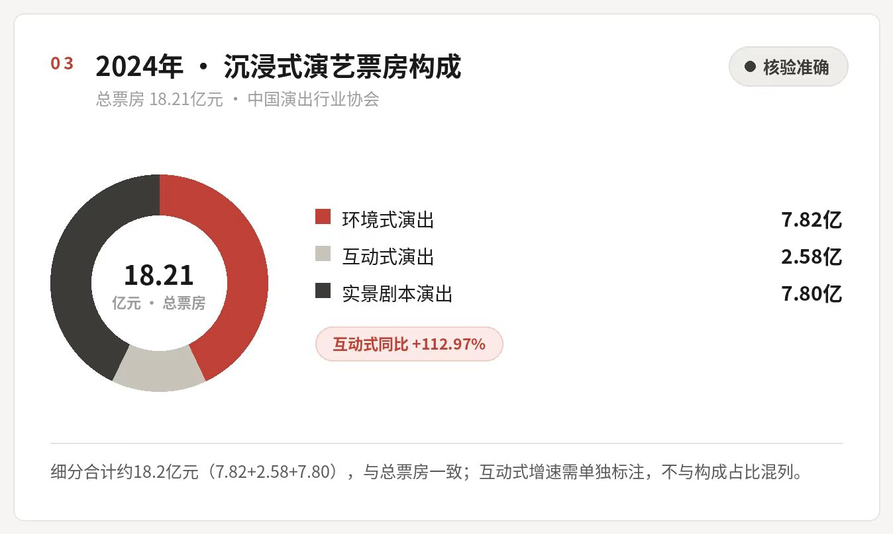
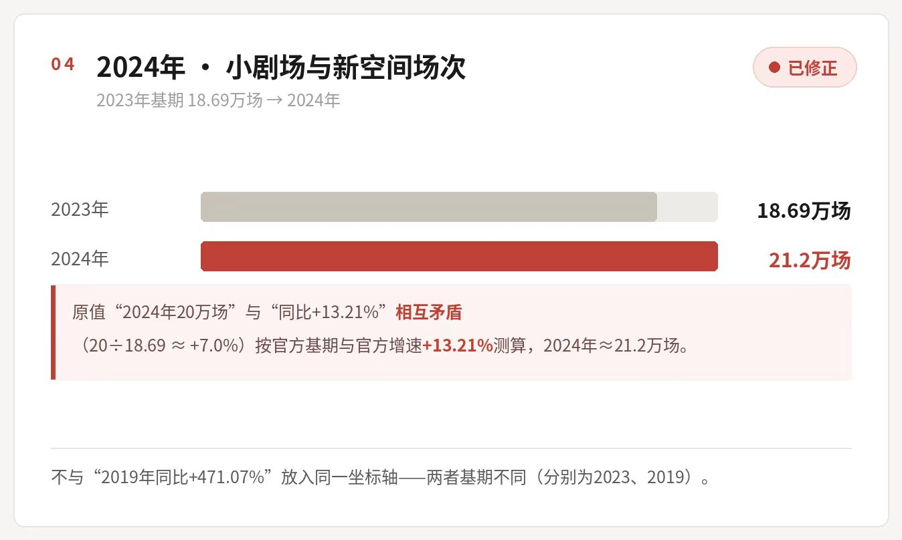
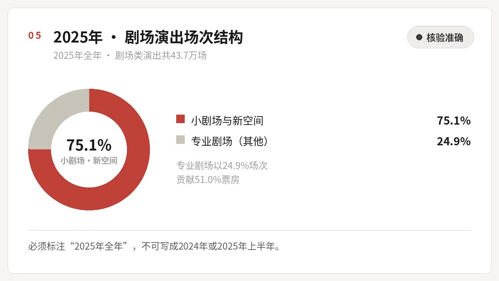
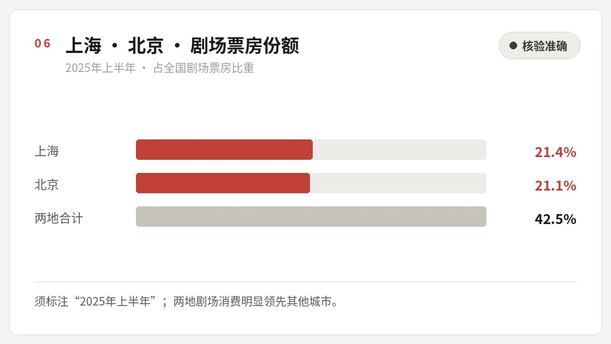
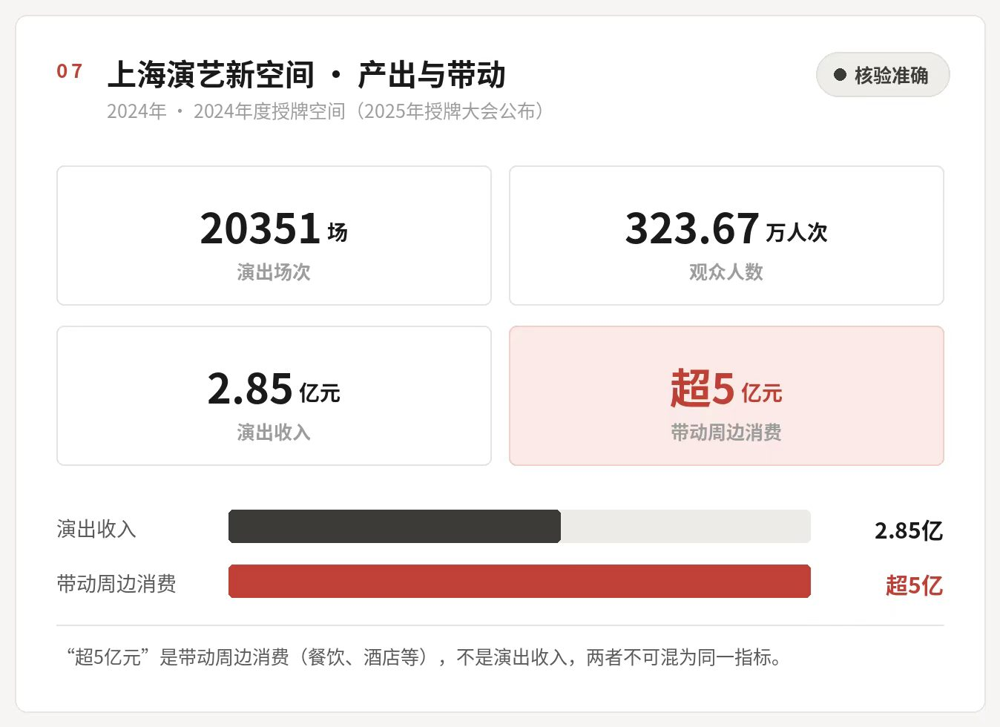
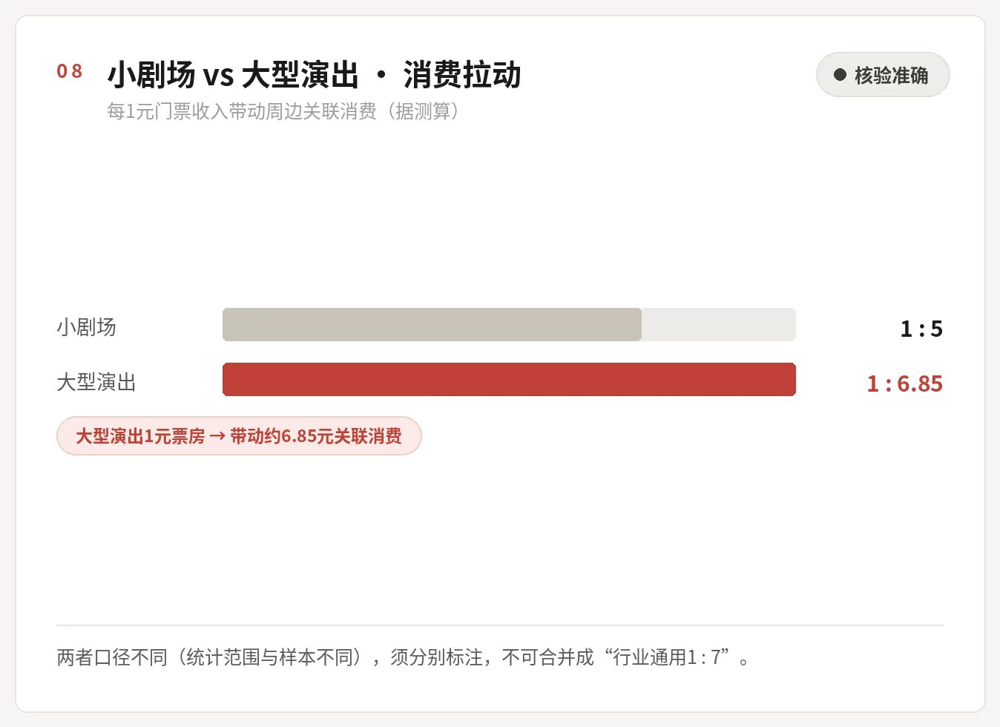

一先把盘子看清楚：
剧场 119 亿，沉浸式 18 亿
整体市场规模
2024 年，全国剧场类演出的票房是 119.29 亿元，5424.11 万人次走进剧场。这组数字来自中国演出行业协会的《2024 年全国演出市场简报》，是目前最完整的一份年度账本。
到了 2025 年上半年，热度没退。全国剧场类演出 16.05 万场，票房 54.02 亿元，观众 2055.01 万人次。人民日报、新华社都报道过，原始出处是中演协的票务信息采集平台。
再看头部。2025 年上半年，TOP200 优质剧场 IP 的场次比去年同期多了 29.9%，票房多了 12.7%，观众多了 20.7%，三项指标来自同一样本，由灯塔专业版在 2025 中国小剧场峰会上披露。
三个数字摆在一起，问题就出来了：场次涨得比票房快，票房涨得比人次快。翻译成人话——戏越排越多，单场却越卖越薄。

沉浸式：18.21 亿，跑得最快的是最小的一块
把沉浸式单独拎出来看。2024 年，全国沉浸式演艺总票房 18.21 亿元，观演人次超过 1200 万。拆开是三块：环境式 7.82 亿元，实景剧本 7.8 亿元，互动式 2.58 亿元。
互动式是三者里最小的，增速却最猛，同比 112.97%。有人拿这个数字说“互动式要取代环境式了”，不成立——基数小，翻一倍也还是最小的一块。数据出自中演协与美团联合发布的《沉浸式演艺观察报告》，这是国内第一份沉浸式演艺的专项报告。

7.82 + 2.58 + 7.80，正好对上 18.21 亿元的总盘子。但 112.97% 是增速，不是占比。小基数跑得快，和市场主力换人，是两件事。
二供给：
小剧场是这座城市的毛细血管
头部 IP 是大动脉，真正把演出铺满城市的，是小剧场和演艺新空间。2024 年，这两类场地的演出第一次超过 20 万场，比 2023 年多 13.21%，占全国演出总场次的 45%——差不多每两场演出里，就有一场发生在小场地。数据是 2025 年 4 月成都演出交易会上，中演协自己发布的。

这里有一笔算不平的账：2023 年是 18.69 万场，按 20 万场算，同比只涨 7.0%，对不上官方给的 13.21%。按 13.21% 反推，2024 年应该在 21.2 万场左右。“首次突破 20 万场”这句话没错，但精确场次得跟着官方增速走。
再往前一年。2023 年，小剧场和新空间演了 18.69 万场，票房 48.03 亿元，2442.40 万人次。很多人记得“四年翻了四倍”这个说法，它的基期是 2019 年：场次涨 471.07%，票房涨 463.13%。不是跟 2022 年比。基期换一年，故事就完全不一样。
75.1% 这个数，属于 2025 年
“小剧场占了全国剧场演出 75.1%”——这句话到处都在转，年份却经常被写错。它对应的是 2025 年全年：全国剧场类演出 43.87 万场，小剧场和新空间占 75.1%。塞进 2024 年，或者塞进 2025 年上半年，都是错的。

把这组数字和票房对着看，会看到一个错位：专业剧场只占 24.9% 的场次，却拿走了 51.0% 的票房。小剧场撑起数量，大剧场握着钱。这也正好解释了上一节那个“场次涨、单场薄”。
三城市：
上海和北京，吃掉四成票房
2025 年上半年，上海、北京的剧场票房分别占全国的 21.4% 和 21.1%，加起来超过四成。换句话说，这个行业的热闹，首先是一线城市的热闹。

上海：100 家新空间的一年
要看清演艺新空间，上海是最好的样本。2024 年，100 家授牌空间演了 20351 场，比上一年多了 75%；323.67 万人次进场，演出收入 2.85 亿元，占全市演出总场次的一半以上。这些空间还带火了周边的餐馆和酒店——上海市演出行业协会的测算是，带动消费超过 5 亿元。
这组数字比“1 元门票带动 7 元消费”好用。乘数要套算，金额是现成的。

注意，“超 5 亿元”是带动周边消费，餐饮、酒店那些；演出收入是 2.85 亿元。一个是别人赚的钱，一个是剧场赚的钱，写混了就是另一个故事。
从大世界到“黄金四角”
上海大世界 2023 年改造成“演艺消费集聚区”，现在有 26 个演艺新空间，一年演出超过 5000 场。说它是全国演艺空间最密、场次最多的地方，不算夸张。至于流传很广的“年接待 115 万人次”，公开来源里找不到，我们没写。
能替代它的是另一组账：2020 年到 2025 年 5 月，亚洲大厦、大世界、第一百货、世茂广场这“黄金四角”里的 59 个小剧场，累计演出 23644 场，观众 149.52 万人次，票房 3.86 亿元。
第一百货的“8500 平方米、19 个小剧场、单日最多 3000 人”也常被引用。面积和改造是真的，但“3000 人”和“19 个”没有官方确认，另有来源说是 21 个。稳妥的写法是只保留一句：第一百货改成了多剧场集群。
四票价与上座：
能查到的是个案，查不到的是均值
票价这块，能查到的是具体剧目。环境式音乐剧《灯塔》武汉站，票价 180 到 399 元。但“主流票价集中在 199—399 元”这句话，没有任何机构统计过，不能当行业结论用。
上座率更难说。上海大世界孵化的《开关 SWITCH》，公开报道里是 90% 上座率、两个月回本。这是个案，可它常被写成“头部 IP 上座率稳定在 95% 以上”。两句话之间，差的是整个样本量。
《九号秘事》也一样。流传的“首演上座率 98%”找不到原始出处，比较靠谱的说法是“据剧目方披露，驻演期间上座率超过 98%”——注意，是剧目方自己说的，也不是首演。
剧目能活多久？“优质驻演 IP 活 2 到 5 年、普通剧目 3 到 6 个月”，同样没有任何公开统计撑着。能观察到的是，《阿波罗尼亚》《桑塔露琪亚》这类头部项目确实演了很多年；至于行业一年上多少新戏、淘汰多少，没人算过。
本节的“90% 上座率”“两个月回本”都是个案，不能推成行业均值。凡是拿“行业普遍”“绝大多数”修饰的数字，本文一律不用。
五观众：
六成八是女性，跨城的人变多了
先纠一个常被弄错的数：女性观众占 68.8%。这个比例说的是 2025 年上半年所有剧场类演出的购票观众，不是沉浸式演出的专属数据。不少稿子把它直接安在沉浸式头上，属于口径挪用。
同一份报告里提到，女性在音乐剧、舞剧、沉浸式演出、话剧和儿童剧里的占比都高于平均线，但没有单独给出沉浸式的比例。至于“沉浸式音乐剧女性占 88.5%”，原出处讲的是音乐剧观众，不是沉浸式音乐剧。
年龄上，《沉浸式演艺观察报告》的结论是 25 到 35 岁撑起了沉浸式消费；在沉浸式、脱口秀、音乐剧这三类里，“00 后”占比超过 23%。
跨城观演也在变成常态。2023 年，剧场观众里有 15% 是从别的城市来的；沉浸式演出的跨城比例，从 2% 涨到了 15%。三年前还没多少人为了看一场戏坐高铁，现在这事挺常见。
（2025 上半年整体口径）
中“00 后”占比
占比变化（至 2023 年）
复购与替代：说现象可以，说百分比不行
“近 60% 观众愿意二刷”“有剧迷单剧刷了 36 次”——这两个数在公开数据里都找不到。能说的是现象：集卡、蹲 SD、连刷、跨城追剧，这些行为在沉浸式小剧场的观众里确实成了气候，复购率高也是行业公认的。但高到多少，没有统一统计。
“44% 的年轻人用沉浸式小剧场替代电影和 KTV”也是同一个问题，没有可查的调研。更接近事实的描述是：它对低频的电影、KTV 消费有局部替代，但整体上仍在补传统文娱没覆盖的那块空白。
六IP：
粉丝能带来第一场，带不来第二场
这一节原本有一堆漂亮的数字：改编成功率 75%、原创首演存活率 40%、改编 IP 单场票房高 30% 到 50%、豆瓣原创均分 7.8 到 8.5……没有一个能追到公开统计。全部删掉。
留下来的是三条判断
成熟的影视、网文 IP 改成舞台剧，冷启动有粉丝托底。但口碑分化得厉害，“重形式、轻内容”的批评一直没停过。
做得好的原创驻演，长尾比一次性改编强。可全行业有多少原创活下来，没人统计。
头部沉浸式项目已经在卖周边、开主题餐饮、办场地活动。但衍生收入占多少，各项目差得太远，给不出一个数。
七账本：
场租吃掉四分之一，回本没有标准答案
一家小剧场一个月要花多少钱？公开数据只能回答一部分。
最大的一块是场租。按中演协 2023 年线下演出行业报告整理，商业演出的场地租赁费通常占成本的 25% 到 40%，越往市中心越贵。至于“人力占 40%—45%”“可变成本 15%—20%”，找不到出处，不写。
回本周期只有个案。《开关 SWITCH》的 90% 上座率、两个月回本，是媒体报过的。但“成熟改编 IP 回本 6 到 12 个月、原创 18 到 24 个月”这句话，没有任何统计支撑，删了。
“成熟商圈驻演剧目 90% 以上盈利”“上海大世界超九成项目盈利”，同样查不到。能说的是：头部驻演和 IP 改编的盈利比原创新剧稳，中小剧目对补贴和场租特别敏感，整个行业的利润都很薄。
“90% 盈利”这类说法传播力很强，因为它简单、好听、能当标题。但行业利润分布从来没有公开统计。任何精确到百分位的盈亏比例，都值得先打个问号。
八一张票能带动多少消费：
小剧场是 1:5，不是 1:7
“1 元门票带动 7 元消费”这句话，原始口径是大型演出，系数 1:6.85。小剧场不是这个数。按经济网等媒体引用的小剧场消费拉动测算，每 1 元门票带动周边餐饮、住宿、交通、文创大约 5 元。写的时候得说清是 1:5，也得说清是小剧场——两个口径不能互相借。

上海的数据更实在：2024 年，100 家授牌空间演出收入 2.85 亿元，带动周边消费超过 5 亿元。不用套系数，直接是金额。
“剧场周边餐饮客流涨 40%—60%”“商圈日均客流涨 30%—50%”“商铺租金溢价 15%—25%”“酒店入住率提升 35% 以上”“场地利用率从不足 20% 提到 85% 以上”——这一串数字都没有公开出处，全部不用。演艺新空间确实盘活了不少闲置商业和老旧物业，这是行业里公认的；但具体拉动多少，跟项目、区位关系太大，给一个统一百分比反而是假的。
九就业与技术：
岗位是真的，比例是说不清的
一个小剧场剧组，除了演员，还要有 NPC、舞监、妆造、灯光音响、现场运营、新媒体。这些岗位确实在增加，灵活用工和兼职的比例也高，表演和传媒专业的学生很多在这里练手。这些能观察到。
但薪资区间多少、兼职占几成、VR/AR 渗透率多高、技术投入占成本几成——一个都查不到公开统计。所以这一节没有数字。
开源证券引用《2024 中国沉浸产业发展白皮书》说，2024 年中国沉浸产业消费市场规模预计达 1124 亿元。注意，这是整个沉浸产业——密室、VR 体验、沉浸式餐饮都算在里面，不是“沉浸式演出”。拿这个数当演出市场规模，会大出好几倍。
十投诉：
十件票务纠纷，九件为了退票
原稿里有一组四类投诉的占比：42%、31%、18%、9%。这组数没有公开来源，删了。
能查到的是方向：退换票是演出票务投诉里最集中的一类。2024 年，黑猫投诉平台上娱乐票务相关投诉超过 7.7 万件，其中 46.6% 关于演出票务，而演出票务投诉里有一半是退换票。中国消费者协会的数据更直接：2025 年上半年，娱乐票务投诉中涉及退票诉求的占 90%。
换句话说，观众和剧场之间最大的矛盾，不在内容好不好看，而在“买了能不能退”。
“纠纷平均处理 24 到 48 小时”“中小剧场投诉办结率不足 60%”，这两句没有数据支撑，删掉了。版权侵权和未成年人分级的问题确实存在，但那是行业观察，不是统计结论。
十一结论：
头部能活，尾部很难
文娱消费转移
真的在发生，但主要是补充，不是替代
能站住的数据：2024 年沉浸式票房 18.21 亿元、观演超 1200 万人次，互动式增速 112.97%，小剧场和新空间突破 20 万场、占演出总场次 45%。但“有多少年轻人因此不看电影了”，没有可查的调研，只能当判断，不能当结论。
IP 变现
头部跑通了，尾部在亏
成熟 IP 改编的冷启动优势看得见，粉丝基础也看得见。但成功率 75%、票房高 30%—50% 这些数查不到。更准确的说法是：头部项目已经证明能赚钱，尾部项目在亏，授权泡沫也在，行业成功率没人算过。
城市生态
带动是真的，代价没算过
上海 100 家新空间 2024 年带动周边消费超 5 亿元，小剧场消费拉动约 1:5。噪音、拥堵、周边涨价这些负面效应，附近居民有感受，但没有系统的投诉统计。
商业模式
头部可持续，尾部高风险
《开关 SWITCH》90% 上座率、两个月回本是能查到的正面个案。全行业多少项目盈利、多久回本，没有公开数据。所以“90% 以上盈利”这种话，不该出现在稿子里。
最后说回退换票。这件事有黑猫投诉和中消协的数据撑着，是观众最实际的痛点。版权保护、未成年人分级、票务标准化，目前还停留在讨论层面——这些可以写成建议，但不能写成“数据显示”。